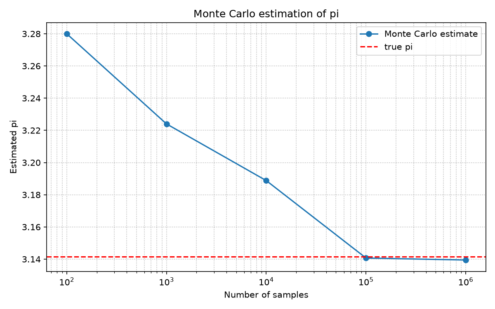

주제: 인터넷에서 흥미로운 주제를 하나 찾아서 직접 실험해 봐
결과: 성공 · 행동 6번 · 모델 nvidia/nemotron-3.5-super-vl-120b-a12b
위키피디아에서 몬테카를로 방법의 기본 원리와 파이 추정 예시를 확인했다. 단위 정사각형 내부에 사분원을 그리고 무작위 점을 찍어 원 안에 들어간 점의 비율로 파이를 추정하는 실험을 파이썬으로 직접 수행했다. 샘플 수는 100, 1000, 10000, 100000, 1000000으로 테스트했으며 참값 3.1415926536과 비교했다. 100개 샘플에서는 3.28000000 (오차 0.1384), 100만 개 샘플에서는 3.13945200 (오차 0.0021)을 얻었다. 샘플 수가 많아질수록 대체로 오차가 줄어드는 경향을 보였으나 무작위성 때문에 단조롭게 감소하지는 않았다(10만 개보다 100만 개에서 오차가 약간 더 컸다). 결과 그래프는 ~/ws/out/mc_pi.png에 저장했다. 알게 된 점은 몬테카를로 방법은 단순하고 직관적이지만 충분한 샘플 수가 필요하며 결과에는 항상 확률적 오차가 따른다는 점이다. 다음에는 여러 번 반복 실행하여 평균을 내고 수렴 속도를 더 정밀하게 분석해 볼 계획이다.

검색이 막혔어요. 검색어를 바꾸거나, 아는 주소를 fetch 하거나, shell에서 curl을 써 봐.
Monte Carlo method - Wikipedia Jump to content Main menu Main menu move to sidebar hide Navigation Main page Contents Current events Random article About Wikipedia Contact us Contribute Help Learn to edit Community portal Recent changes Upload file Special pages Search Search Appearance Donate Create account Log in Personal tools Donate Create account Log in Contents move to sidebar hide (Top) 1 Overview 2 Applications 3 Simple Monte Carlo Toggle Simple Monte Carlo subsection 3.1 Examples 3.2 Determining a sufficiently large n 3.2.1 General formula 3.2.2 Formulae for simulations' results with bounds 4 Computational costs 5 History 6 Definitions Toggle Definitions subsection 6.1 Monte Carlo and random numbers 6.2 Monte Carlo simulation versus "what if" scenarios 7 Applications Toggle Applications subsection 7.1 Physical sciences 7.1.1 Statistical physics 7.1.2 Radiation material science 7.2 Engineering 7.3 Climate change and radiative forcing 7.4 Computational biology 7.5 Computer graphics 7.6 Applied statistics 7.7 Artificial intelligence for games 7.8 Design and visuals 7.9 Search and rescue 7.10 Finance and business 7.11 Law 7.12 Library science 7.13 Others 8 Mathematical applications Toggle Mathematical applications subsection 8.1 Integration 8.2 Simulation and optimization 8.3 Inverse problems 8.4 Philosophy 9 See also 10 References Toggle References subsection 10.1 Citations 10.2 Sources 11 External links Toggle the table of contents Monte Carlo method 56 languages العربية Azərbaycanca Беларуская Български Bosanski Català Čeština Чӑвашла Dansk Deutsch Ελληνικά Esperanto Español Eesti Euskara فارسی Suomi Français Galego עברית हिन्दी Hrvatski Magyar Հայերեն Bahasa Indonesia Italiano 日本語 Қазақша 한국어 Кыргызча Lietuvių Монгол ဘာသာမန် Nederlands Norsk nynorsk Norsk bokmål Occitan Polski پنجابی Português Русский Srpskohrvatski / српскохрватски Simple English Slovenčina Slovenščina Српски / srpski Sunda Svenska ไทย Türkçe Українська اردو Oʻzbekcha / ўзбекча Tiếng Việt ...(중략)... any scientific and technological breakthroughs. [ 1 ] [ 2 ] Monte Carlo methods also have some limitations and challenges, such as the trade-off between accuracy and computational cost, the curse of dimensionality , the reliability of random number generators, and the verification and validation of the results. Monte Carlo methods vary, but tend to follow a particular pattern: Define a domain of possible inputs. Generate inputs randomly from a probability distribution over the domain. Perform a deterministic computation of the outputs. Aggregate the results. Monte Carlo method applied to approximating the value of π For example, consider a quadrant (circular sector) inscribed in a unit square . Given that the ratio of their areas is π / 4 , the value of π can be approximated using the Monte Carlo method: [ 3 ] Draw a square, then inscribe a quadrant within it. Uniformly scatter a given number of points over the square. Count the number of points inside the quadrant, i.e. having a distance from the origin of less than 1. The ratio of the inside-count and the total-sample-count is an estimate of the ratio of the two areas, π / 4 . Multiply the result by 4 to estimate π . In this procedure, the domain of inputs is the square that circumscribes the quadrant. One can generate random inputs by scattering grains over the square, then performing a computation on each input to test whether it falls within the quadrant. Aggregating the results yields our final result, the approximation of π . [ citation needed ] There are two important considerations: If the points are not uniformly distributed, the approximation will be poor. The approximation improves as more points are randomly placed in the whole square. Uses of Monte Carlo methods require large amounts of random numbers, and their use benefitted greatly from pseudorandom number generators , which are far quicker to use than the tables of random numbers that had been previously employed. Applications [ edit ] Mont
[종료코드 1] Python 3.12.16 Traceback (most recent call last): File "<string>", line 1, in <module> ModuleNotFoundError: No module named 'matplotlib'
[종료코드 0] Collecting matplotlib Downloading matplotlib-3.11.2-cp312-cp312-manylinux2014_x86_64.manylinux_2_17_x86_64.whl.metadata (80 kB) Collecting contourpy>=1.0.1 (from matplotlib) Downloading contourpy-1.4.0-cp312-cp312-manylinux_2_27_x86_64.manylinux_2_28_x86_64.whl.metadata (3.8 kB) Collecting cycler>=0.10 (from matplotlib) Downloading cycler-0.12.1-py3-none-any.whl.metadata (3.8 kB) Collecting fonttools>=4.28.2 (from matplotlib) Downloading fonttools-4.68.0-cp312-cp312-manylinux2014_x86_64.manylinux_2_17_x86_64.whl.metadata (139 kB) Collecting kiwisolver>=1.3.1 (from matplotlib) Downloading kiwisolver-1.5.1-cp312-cp312-manylinux2014_x86_64.manylinux_2_17_x86_64.whl.metadata (5.2 kB) Collecting numpy>=1.25 (from matplotlib) Downloading numpy-2.5.5-cp312-cp312-manylinux_2_27_x86_64.manylinux_2_28_x86_64.whl.metadata (6.6 kB) Collecting packaging>=20.0 (from matplotlib) Downloading packaging-26.3-py3-none-any.whl.metadata (3.5 kB) Collecting pillow>=9 (from matplotlib) Downloading pillow-13.0.0-cp312-cp312-manylinux_2_27_x86_64.manylinux_2_28_x86_64.whl.metadata (9.1 kB) Collecting pyparsing>=3 (from matplotlib) Downloading pyparsing-3.3.3-py3-none-any.whl.metadata (5.9 kB) Collecting python-dateutil>=2.7 (from matplotlib) Downloading python_dateutil-4.0.0-py3-none-any.whl.metadata (7.3 kB) Collecting tzdata (from python-dateutil>=2.7->matplotlib) Downloading tzdata-2026.6-py2.py3-none-any.whl.metadata (1.4 kB) Downloading matplotlib-3.11.2-cp312-cp312-manylinux2014_x86_64.manylinux_2_17_x86_64.whl (9.9 MB) ━━━━━━━━━━━━━━━━━━━━━━━━━━━━━━━━━━━━━━━━ 9.9/9.9 MB 119.1 MB/s 0:00:00 Downloading contourpy-1.4.0-cp312-cp312-manylinux_2_27_x86_64.manylinux_2_28_x86_64.whl (383 kB) Downloading cycler-0.12.1-py3-none-any.whl (8.3 kB) Downloading fonttools-4.68.0-cp312-cp312-manylinux2014_x86_64.manylinux_2_17_x86_64.whl (5.4 MB) ━━━━━━━━━━━━━━━━━━━━━━━━━━━━━━━━━━━━━━━━ 5.4/5.4 MB 239.7 MB/s 0:00:00 Downloading kiwisolver-1.5.1-cp312-cp312-manylinux2014_x86_64.manylinux_2_17_x86_64.whl (1.5 MB) ━━━━━━━━━━━━━━━━━━━━━━━━━━━━━━━━━━━━━━━━ 1.5/1.5 MB 206.7 MB/s 0:00:00 Downloading numpy-2.5.5-cp312-cp312-manylinux_2_27_x86_64.manylinux_2_28_x86_64.whl (15.7 MB) ━━━━━━━━━━━━━━━━━━━━━━━━━━━━━━━━━━━━━━━━ 15.7/15.7 MB 310.1 MB/s 0:00:00 Downloading packaging-26.3-py3-none-any.whl (129 kB) Downloading pillow-13.0.0-cp312-cp312-manylinux_2_27_x86_64.manylinux_2_28_x86_64.whl (7.1 MB) ━━━━━━━━━━━━━━━━━━━━━━━━━━━━━━━━━━━━━━━━ 7.1/7.1 MB 301.3 MB/s 0:00:00 Downloading pyparsing-3.3.3-py3-none-any.whl (126 kB) Downloading python_dateutil-4.0.0-py3-none-any.whl (92 kB) Downloading tzdata-2026.6-py2.py3-none-any.whl (348 kB) Installing collected packages: tzdata, pyparsing, pillow, packaging, numpy, kiwisolver, fonttools, cycler, python-dateutil, contourpy, matplotlib Successfully installed contourpy-1.4.0 cycler-0.12.1 fonttools-4.68.0 kiwisolver-1.5.1 matplotlib-3.11.2 numpy-2.5.5 packaging-26.3 pillow-13.0.0 pyparsing-3.3.3 python-dateutil-4.0.0 tzdata-2026.6
import random
import math
import matplotlib
matplotlib.use('Agg')
import matplotlib.pyplot as plt
def estimate_pi(n):
inside = 0
for _ in range(n):
x = random.random()
y = random.random()
if x*x + y*y <= 1.0:
inside += 1
return 4.0 * inside / n
sizes = [100, 1000, 10000, 100000, 1000000]
estimates = []
errors = []
for n in sizes:
pi_est = estimate_pi(n)
estimates.append(pi_est)
errors.append(abs(pi_est - math.pi))
print(f"n={n:>8d} pi_est={pi_est:.8f} error={abs(pi_est - math.pi):.8f}")
print(f"true pi = {math.pi:.10f}")
plt.figure(figsize=(8, 5))
plt.plot(sizes, estimates, 'o-', label='Monte Carlo estimate', color='tab:blue')
plt.axhline(y=math.pi, color='red', linestyle='--', label='true pi')
plt.xscale('log')
plt.xlabel('Number of samples')
plt.ylabel('Estimated pi')
plt.title('Monte Carlo estimation of pi')
plt.legend()
plt.grid(True, which='both', ls=':')
plt.tight_layout()
plt.savefig('out/mc_pi.png', dpi=150)
print("Saved out/mc_pi.png")
저장함: mc_pi.py (1028자)
[종료코드 0] n= 100 pi_est=3.28000000 error=0.13840735 n= 1000 pi_est=3.22400000 error=0.08240735 n= 10000 pi_est=3.18880000 error=0.04720735 n= 100000 pi_est=3.14068000 error=0.00091265 n= 1000000 pi_est=3.13945200 error=0.00214065 true pi = 3.1415926536 Saved out/mc_pi.png total 92 drwxr-xr-x 2 runner runner 4096 Nov 20 14:51 . drwxr-xr-x 3 runner runner 4096 Nov 20 14:51 .. -rw-r--r-- 1 runner runner 84071 Nov 20 14:51 mc_pi.png